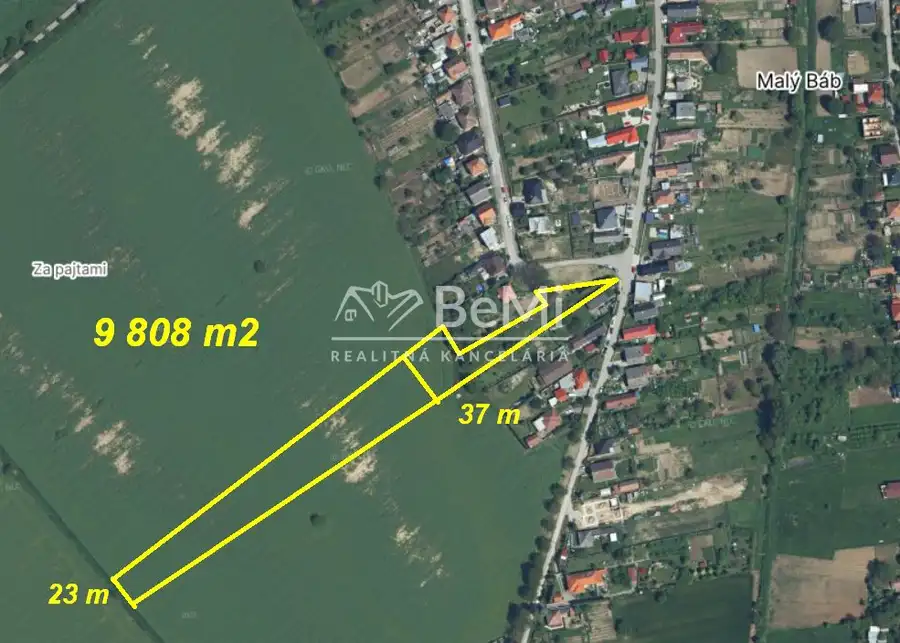
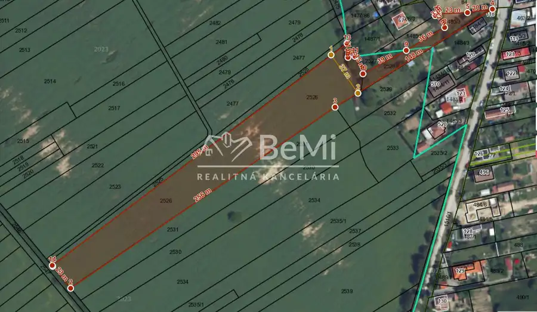

Predaj · Pozemok
Malý Báb orná pôda časť v intraviláne obce ID 623-14-MIG
Báb
Cena na vyžádání


- Plocha9808 m²
- VlastníctvoOsobné
O nehnuteľnosti
623-14-MIGNa predaj orná pôda v k.ú. Malý Báb o výmere až 9 808 m2. Ucelený pozemok – rozmery viď foto v galérii...Jeden majiteľ...Prístup z obecnej cesty, z troch strán ...Časť pozemku je prepojený s intravilánom obce Báb – prístup s obecnej komunikácie (aj investícia ako staveb.pozemok).Zaujímavá investičná príležitosť, dobrý prístup, blízko obce aj napojenie na diaľnicu R1...Mgr.Michal Geletič 0905114074geletic@realitybemi.skCENY NIE SÚ VRÁTANE PROVÍZIE ZA KOMPLETNÝ SERVIS,spojený s predajom nehnuteľnosti ...
Parametre
- Druh
- Orná pôda
- Dátum zverejnenia
- 23. 06. 2026
- Plocha pozemku
- 9808 m²
- Typ
- Predaj
- Vlastníctvo
- Osobné
Kde to je


Ďalšie ponuky
Celá ponuka